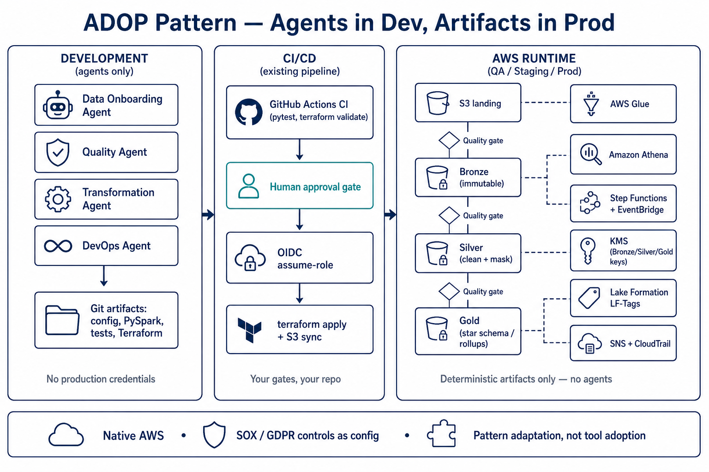

Perficient DE accelerator · agents generate in Dev · your CI/CD promotes artifacts · agents never run in production.
| Artifact | Client value |
|---|---|
| YAML spec + semantic layer | Readable contract for engineers and auditors |
| Bronze → Silver → Gold ETL + tests | Same rules locally and on Glue; fail before deploy |
| Quality gates + PII / LF-Tags | Critical failures block promotion; column-level access |
| Step Functions, Terraform, GitHub Actions | Fits current AWS + CI/CD; OIDC, no static keys |
| advisory_transactions (SOX) | web_events (GDPR) |
|---|---|
| Daily brokerage CSV → Gold star schema. Financial formulas are critical. Bad rows quarantined for review. | Hourly clickstream JSONL → Gold rollups. No-consent events never processed. Right-to-erasure via hashed user token. |

Pilot the pattern on a sandbox feed → adapt generators to your modules, IAM, VPC, tags, and pipeline → enable your platform team to onboard the next sources in hours. The consulting backlog is the adaptation gap (approved modules, permission boundaries, landing-zone accounts, WORM retention, agent governance) — not a rip-and-replace of AWS.
Time figures are typical senior-engineer estimates plus ADOP published token costs. Substitute the client’s actuals. Not a proposal to run this codebase in a regulated production estate.